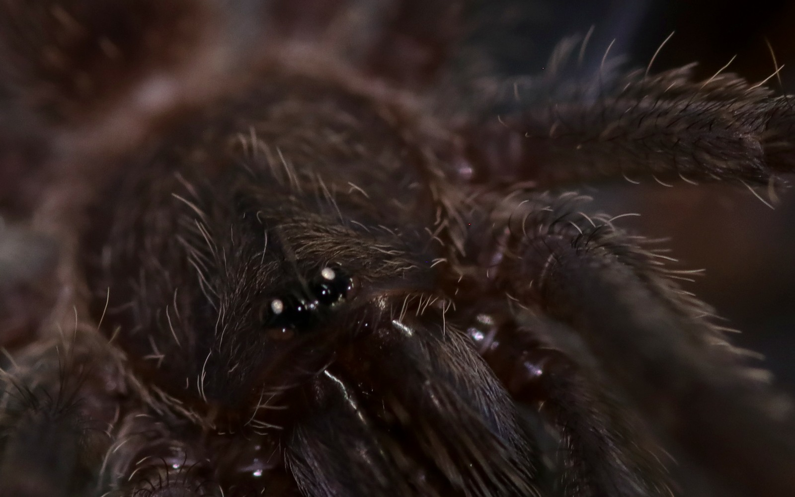
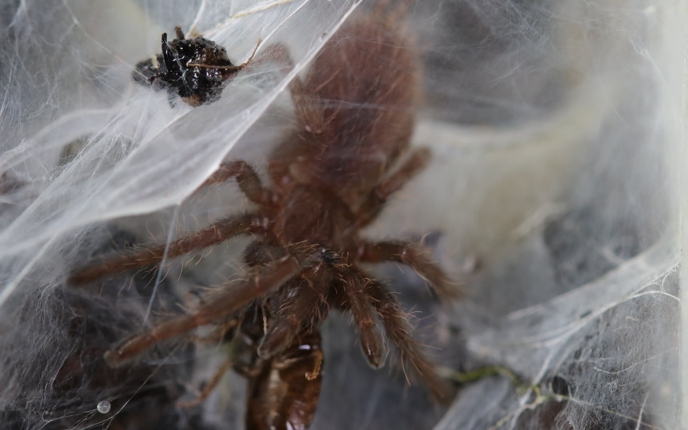
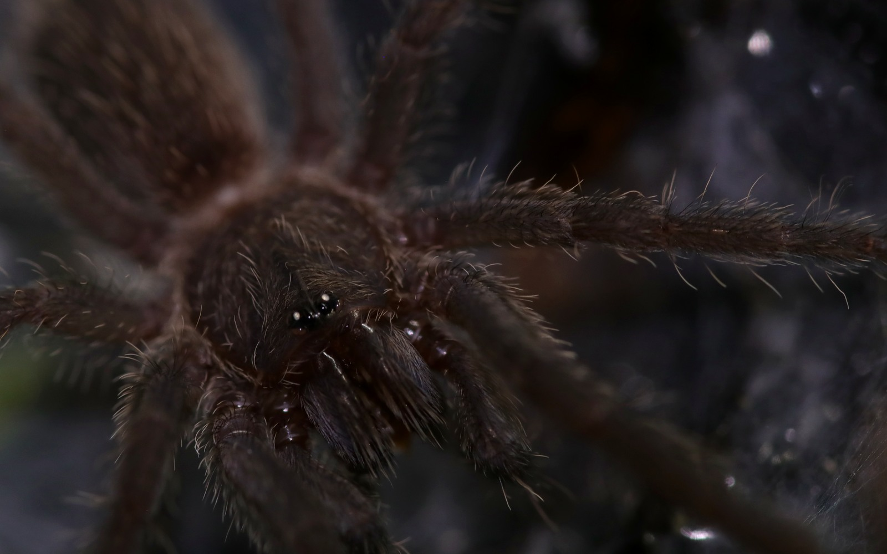
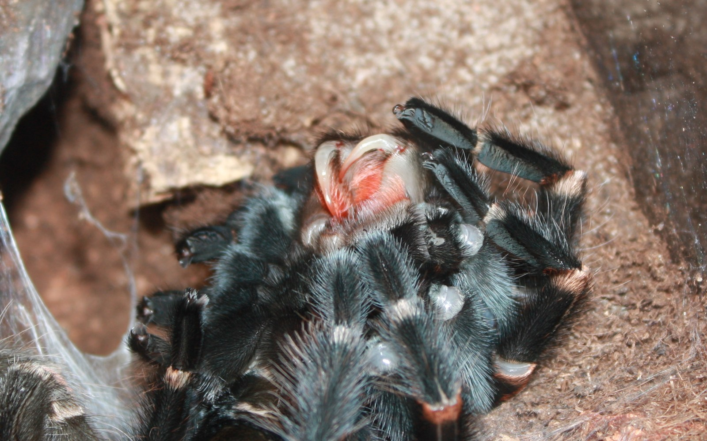

Prosoma
Also called the cephalothorax. It carries the eyes, chelicerae, pedipalps, and four pairs of walking legs beneath a firm dorsal carapace.
Spider anatomy
Spiders are arachnids, not insects. Their compact design joins a sensory and mechanical front section to an abdomen that houses much of the animal’s internal machinery—including silk production.

Body map
The markers identify broad dorsal landmarks on a male Ceratogyrus darlingi. Fine structures and ventral organs are explained below rather than placed where this photograph cannot show them.
 1234
1234Also called the cephalothorax. It carries the eyes, chelicerae, pedipalps, and four pairs of walking legs beneath a firm dorsal carapace.
The opisthosoma is softer and usually unsegmented externally. It contains much of the digestive, reproductive, circulatory, respiratory, and silk-producing anatomy.
Simple eyes sit near the front. Below them, chelicerae carry the fangs; pedipalps help with sensing, prey handling, and reproduction in mature males.
Each leg has seven main segments from coxa to tarsus. Muscles and internal fluid pressure work together to move different joints.
Verified close looks
Real photographs are used where the archive shows a structure clearly. Topics stay text-only when the available photographs do not support a reliable visual explanation.

Most spiders have eight simple eyes, though the number and arrangement vary. Several small reflective eyes are visible together here above the chelicerae; the photograph does not reveal the complete arrangement equally clearly.
Text only · exposed fangs not visible in the current archive
The paired chelicerae are the first appendages. Each ends in a fang connected to a venom gland. They grasp and puncture prey; spiders take in liquefied food rather than chewing with jaws.
Text only · a true palpal-bulb macro is still needed
The shorter appendage pair beside the chelicerae is richly sensory and helps handle prey. In adult males, the tips are modified into reproductive organs. A distant whole-animal photo was removed because it did not show those bulbs clearly enough.

Movable spinnerets sit at the rear of the abdomen. Different silk glands make materials for retreats, draglines, egg sacs, prey capture, and vibration-sensitive structures. This photograph shows the silk clearly, but not the spinnerets themselves.
Text only · book-lung openings are not clear enough in the current archive
Mygalomorph spiders such as tarantulas usually have two pairs of book lungs. The openings sit on the underside of the abdomen, while the gas-exchanging lamellae are hidden inside. This subject needs a clear ventral photograph before it receives another image.

Some setae detect touch and air movement. Slit-like strain sensors in the exoskeleton respond to mechanical forces, giving spiders a detailed sense of vibration. A photograph can show the hairs, but it cannot reveal each hair’s function by appearance alone.

A rigid exoskeleton cannot expand continuously. A spider forms a new one beneath the old, lies on its back or side, withdraws from the old cuticle, and expands before the replacement hardens.
Read further
This guide is a visual introduction, not a dissection manual. The references below provide more detail and diagrams.